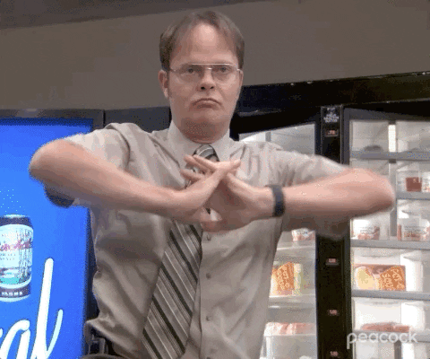

Segundou com dados
Sempre em evolução <Objetivo: mostrar como o R permitiu identificar linhagens superiores de arroz através de modelos mistos e seleção multivariada.
O R foi meu laboratório estatístico, ele transformou dados experimentais em decisões baseadas em evidências.
Quantas vezes, nas análises do dia a dia, você já confiou numa abordagem e com o tempo percebeu que os resultados não eram tão consistentes quanto pareciam?
Variação ambiental forte - risco de seleção errada por médias simplesModelos mistos combinam:
Efeitos fixos: ambiente, tratamentos
Efeitos aleatórios: genótipos, blocos, repetições
y = Xb+ Zg + e
onde:
Xb: efeitos fixos
Zg: efeitos genéticos aleatórios
e: erro residual
Essa estrutura permite separar o que é mérito genético do que é ruído ambiental.
znh # modelo <- lmer(producao ~ ambiente + (1|linhagem) + (1|bloco), data = dados) # summary(modelo)}
Principais pacotes utilizados:
| Etapa | Pacote | Função |
|---|---|---|
| Modelagem | lme4 |
lmer() para ajuste do modelo misto |
| Parâmetros genéticos | metan |
herdabilidade, variâncias, acurácia |
| Seleção multivariada | MGIDI |
índice de desempenho genotípico |
| Manipulação | dplyr |
Manipulação de dados |
| Visualização | ggplot2 |
BLUPs, correlações, rankings |
O modelo estimou variância genética, herdabilidade, significância do modelo.
Esses parâmetros mostram onde realmente há ganho genético possível.
As barras azuis representam linhagens acima da média e as vermelhas, abaixo.
Por fim, usei o índice MGIDI para integrar todos os caracteres.
As linhagens com menor índice (à esquerda) foram as mais equilibradas.
O gráfico radar mostra os pontos fortes e fracos de cada uma.
O R me deu autonomia analítica. O resultado foi científico, técnico e estratégico.
Slides criados por Jennifer Lopes, para live da Comunidade de Estatística Thiago Marques.